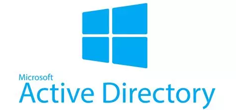
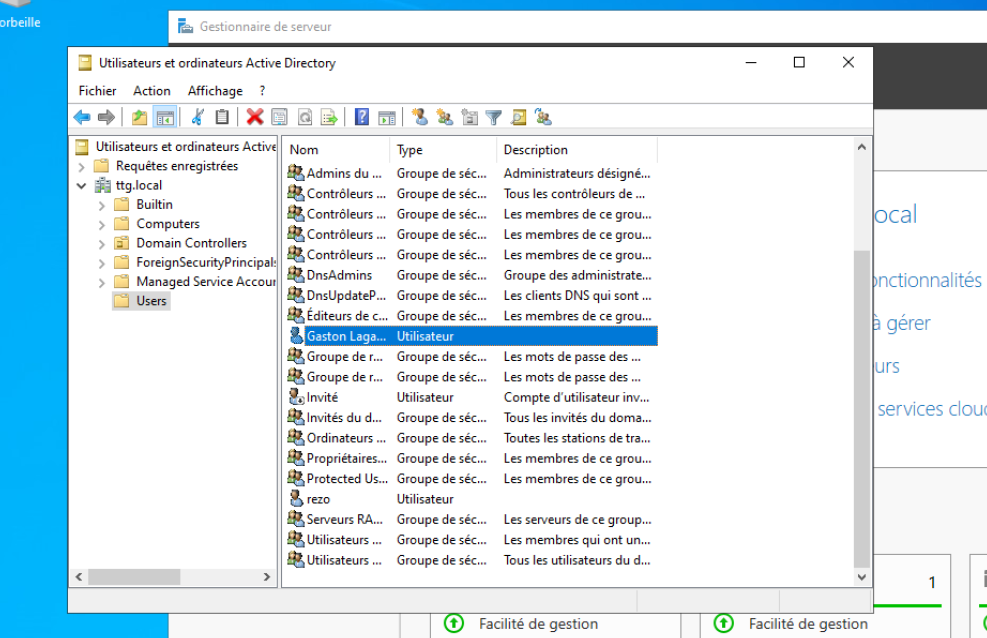
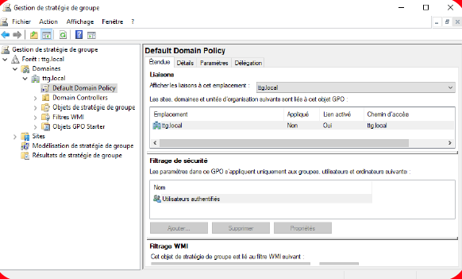
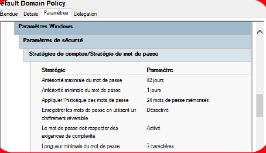
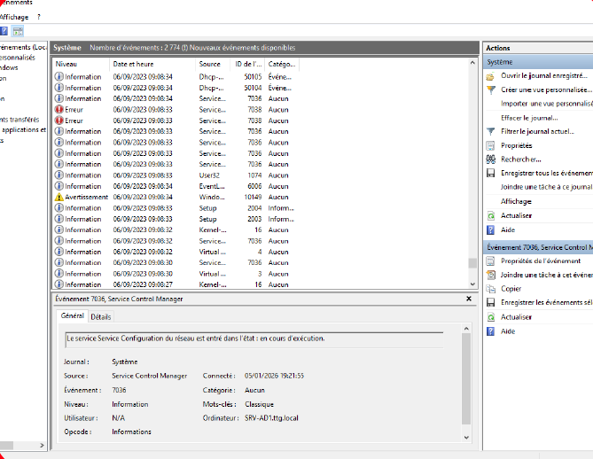

Déploiement d'une infrastructure Active Directory redondante sous Windows Server, avec configuration des GPO de sécurité, gestion des utilisateurs et surveillance via l'Observateur d'événements.

L'Active Directory (AD) est un service d'annuaire développé par Microsoft. Il constitue le cœur du système d'information d'une entreprise en centralisant la gestion des utilisateurs, des ordinateurs et des droits d'accès au sein du réseau.
Concrètement, c'est lui qui répond à une question fondamentale à chaque connexion : "Qui es-tu et à quoi as-tu le droit d'accéder ?". Il assure trois fonctions essentielles :
Pourquoi c'est critique ? Si l'AD tombe, personne ne peut se connecter. Plus d'accès aux fichiers, aux mails, aux applications. C'est pourquoi la redondance est indispensable en entreprise.

Installation et configuration du rôle AD DS sur Windows Server. Création du domaine ttg.local, configuration du DNS intégré, mise en place des Unités d'Organisation (OU) pour structurer utilisateurs et machines par rôle.

Mise en place des Group Policy Objects (GPO) au niveau du domaine. Configuration de la Default Domain Policy avec filtrage de sécurité restreint aux utilisateurs authentifiés, garantissant que les politiques ne s'appliquent qu'aux comptes légitimes.

Configuration stricte : antériorité maximale 42 jours, antériorité minimale 1 jour, historique de 24 mots de passe mémorisés, complexité activée, longueur minimale 7 caractères, chiffrement réversible désactivé.

Analyse des journaux système Windows pour contrôler le bon fonctionnement de l'infrastructure. Identification des événements critiques, erreurs de service et suivi du démarrage des services réseau — pratique essentielle pour la détection d'incidents de sécurité.
Déploiement de deux contrôleurs de domaine (AD1 et AD2) avec réplication automatique de l'annuaire. En cas de panne du contrôleur principal, AD2 prend le relais automatiquement — les utilisateurs continuent à s'authentifier sans interruption.
Isolation des services critiques d'authentification et restriction des accès réseau pour limiter la surface d'attaque. Bien que certains tests avancés n'aient pas pu être réalisés en conditions réelles, la sécurisation par conception a été appliquée tout au long du projet.
Comprendre les menaces pour mieux défendre — une approche indispensable en administration système.
Un attaquant ayant compromis un poste peut voler les condensats NTLM ou tickets Kerberos pour se déplacer latéralement dans le réseau sans connaître les mots de passe en clair.
Un compte compromis peut tenter d'obtenir les droits d'un administrateur du domaine pour prendre le contrôle total de l'AD et de toutes les machines du réseau.
Rendre le contrôleur de domaine indisponible paralyse l'ensemble du réseau. Sans authentification possible, aucun utilisateur ne peut travailler.
L'Observateur d'événements permet de détecter les tentatives d'authentification suspectes, les modifications non autorisées de GPO et les anomalies système.
Chaque utilisateur ne dispose que des droits strictement nécessaires à ses missions. Les comptes administrateurs sont séparés des comptes utilisateurs courants.
Par contrainte de temps et d'accès au matériel, certains tests de sécurité avancés n'ont pas pu être menés. L'identification de cette limite fait partie de la démarche professionnelle.
Comprendre qu'un service d'authentification n'est pas qu'un outil technique — c'est un élément critique dont la disponibilité conditionne l'activité entière d'une organisation.
Adopter une approche "security by design" : penser aux menaces dès la conception. Les GPO, la redondance et la journalisation sont des réponses à des risques réels et documentés.
Configuration cohérente et reproductible, documentation des choix techniques, démarche proche de ce qu'on retrouve en entreprise dans les équipes IT et cybersécurité.